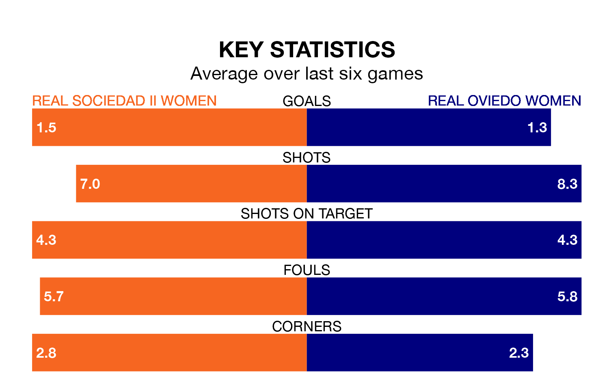

Two of Segunda Federación Femenina's meanest defences go head-to-head on Sunday, when Real Sociedad II Women host Real Oviedo Women.
Only three sides – UD Tenerife II Women, Real Madrid II Women and Fundación Tenerife Women – have conceded fewer goals than Sociedad II Women to date: the home side have let in just 14 goals in 17 games.
Oviedo Women have conceded the same number of goals in 17 games, giving them the joint-fourth tightest back line so far this season.
Sociedad II Women are 14th in the table after 17 games, of which they have won six and drawn six, earning 24 points.
Oviedo Women are eight places ahead of the home side in sixth, with 10 wins and four draws putting them on 34 points.
Sociedad II Women are in mixed form in Segunda Federación Femenina, with three wins and a draw from their last six games.
With four wins and two losses over that period, the visitors' form is slightly better – they have taken 12 points from 18, compared to Sociedad II Women's 10.
Sociedad II Women's last match was on Sunday, a 2-0 loss against Real Madrid II Women.
Oviedo Women beat Espanyol II Women 1-0 last time out, on Wednesday, with on the scoresheet.
Updated: 08:51 (UTC), 25/01/24